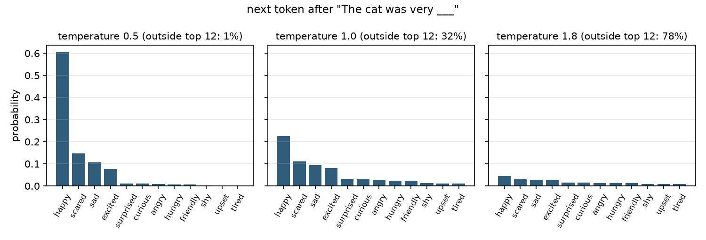

练习 03：对比几种解码方法
模型只给出下一个词的概率，怎样从概率里挑词，决定了写出来的是车轱辘话、通顺的故事还是乱码。用练习 01 的小模型把贪心、束搜索、温度、top-k、top-p 各跑一遍，并排看结果，再用数字量一量
一、要做的是什么
练习 01 训练出的模型，每一步只做一件事：给出下一个 token 的概率分布，4096 个 token 每个一个概率。它本身不会"写"。真正把 token 一个个挑出来、接成一段话的，是模型外面的一小段程序，叫解码算法。
同一个模型，换一种解码算法，写出来的东西可以差别很大。这一篇用同一个训练好的模型，实现并对比七种设置：
- 贪心：每一步都选概率最高的。
- 束搜索：同时保留几条候选，最后挑整体概率最高的一条。
- 纯采样：按模型给的概率抽签。
- 温度 0.7 和温度 1.8：抽签之前先把概率分布变尖或者变平。
- top-k 和 top-p：抽签之前先把概率低的尾巴砍掉。
先在同一个开头上让每种方法各写一段，用眼睛看；再在 40 个开头上各写 100 个 token，用三个数字量。
二、七种方法的代码
贪心
最简单的做法：每一步取概率最高的 token 接上去。argmax 就是"取最大值所在的位置"。
def greedy(ids, n):
"""Greedy: always pick the most likely token."""
ids = list(ids)
for _ in range(n):
nxt = next_logprobs(ids).argmax().item()
ids.append(nxt)
if nxt == EOT: break
return ids采样，以及温度、top-k、top-p
采样是按概率抽签：一个 token 的概率是 30%，它就有 30% 的机会被抽中。在此基础上有三个常用的调节旋钮：
- 温度：抽签前把模型的打分（logits）除以温度再做 softmax。温度小于 1，高分和低分的差距被拉大，分布变尖，高概率的 token 更占优势；温度大于 1，差距被缩小，分布变平，低概率的 token 也有了机会。温度趋近 0 时就等于贪心。
- top-k：只在概率最高的 k 个 token 里抽，其余的概率设为 0。
- top-p（也叫核采样）：把 token 按概率从高到低排，从头开始累加，加到总和刚好达到 p（比如 0.9）为止，只在这些 token 里抽。模型很确定时，可能前两三个就够 0.9 了；模型不确定时，要几十个才够。所以 top-p 保留的个数会随情况变，top-k 是固定的。
砍掉尾巴之后，剩下的概率加起来不到 1 了，所以最后要除以总和重新归一化。
def sample(ids, n, temperature=1.0, top_k=None, top_p=None, gen=None):
"""Draw a token according to the probabilities. temperature flattens or sharpens the distribution;
top_k / top_p cut off the low-probability tail before drawing."""
ids = list(ids)
for _ in range(n):
logits = next_logprobs(ids) / temperature
probs = F.softmax(logits, dim=-1)
if top_k is not None:
# keep only the k most likely tokens, set the rest to 0
kth = torch.topk(probs, top_k).values[-1]
probs = torch.where(probs >= kth, probs, torch.zeros_like(probs))
if top_p is not None:
# sort from most to least likely and keep tokens until the running total reaches p
sp, si = torch.sort(probs, descending=True)
cum = torch.cumsum(sp, 0)
keep = cum - sp < top_p # keep a token if the total before it is still below p
probs = torch.zeros_like(probs).scatter(0, si[keep], sp[keep])
probs = probs / probs.sum() # renormalize after cutting the tail so the probabilities sum to 1
nxt = torch.multinomial(probs.cpu(), 1, generator=gen).item()
ids.append(nxt)
if nxt == EOT: break
return ids束搜索
贪心有个问题：每一步只看眼前。第一步选了概率最高的词，可能把后面的路走窄，整句话加起来反而不如另一条路。束搜索的办法是同时保留几条候选（这里 5 条，叫束宽）：每一步把每条候选都往后延伸 5 种可能，得到 25 条，按整条的累计对数概率排序，留下最好的 5 条，继续。最后返回累计概率最高的那一条。
为什么用对数概率相加，而不是概率相乘？一整句的概率是每一步概率连乘，乘上几十个小于 1 的数，结果会小到计算机存不下；取对数之后乘法变成加法，数值稳定。两种排序结果一样。
def beam_search(ids, n, width=5):
"""Beam search: keep the width best candidates; at each step extend every candidate by one token and keep
the width best again. A candidate's score is the sum of the log-probabilities of its tokens."""
beams = [(0.0, list(ids))] # (total log-probability, token list)
finished = []
for _ in range(n):
cands = []
for score, seq in beams:
lp = next_logprobs(seq)
top = torch.topk(lp, width)
for v, i in zip(top.values.tolist(), top.indices.tolist()):
cands.append((score + v, seq + [i]))
cands.sort(key=lambda c: c[0], reverse=True)
beams = []
for score, seq in cands:
if seq[-1] == EOT:
finished.append((score, seq))
else:
beams.append((score, seq))
if len(beams) == width: break
if len(finished) >= width: break
pool = finished + beams
return max(pool, key=lambda c: c[0])[1]三、同一个开头，七种写法
开头都是"Once upon a time, there was a little girl named Mia. She"，每种方法续写最多 120 个 token。用到随机抽签的几种方法都用同一个随机种子（3），这样它们的差别只来自方法本身。
methods = {
"greedy": lambda: greedy(ids, N),
"beam search (width 5)": lambda: beam_search(ids, N, width=5),
"pure sampling (temperature 1, no truncation)": lambda: sample(ids, N, gen=torch.Generator().manual_seed(3)),
"temperature 0.7": lambda: sample(ids, N, temperature=0.7, gen=torch.Generator().manual_seed(3)),
"temperature 1.8": lambda: sample(ids, N, temperature=1.8, gen=torch.Generator().manual_seed(3)),
"top-k (k = 40)": lambda: sample(ids, N, top_k=40, gen=torch.Generator().manual_seed(3)),
"top-p (p = 0.9)": lambda: sample(ids, N, top_p=0.9, gen=torch.Generator().manual_seed(3)),
}
print("opening:", prompt)
for name, fn in methods.items():
print(f"\n=== {name} ===")
print(text(fn()))贪心：
=== greedy ===
Once upon a time, there was a little girl named Mia. She was very excited because she was going to the park. She put on her shoes and ran to the park.
When Mia arrived at the park, she saw a big tree. She wanted to climb it. She climbed up the tree and started to climb. She was so happy!
Mia was so excited. She ran up to the tree and started to climb. She was so excited! She climbed up the tree and down the tree. She felt so free and happy.
Mia had so much fun at the park. She was so excited to go back to the park.开头很正常，越往后越绕圈子："She climbed up the tree and started to climb. She was so happy! Mia was so excited. She ran up to the tree and started to climb. She was so excited!"反复说爬树和开心。练习 01 里温度 0 的那段（"He drew a big sun, a sun, and a sun"）是同一个现象：每一步都选最可能的词，而一句话说过一遍之后，模型会觉得再说一遍的可能性更高，于是越写越绕。
束搜索（宽度 5）：
=== beam search (width 5) ===
Once upon a time, there was a little girl named Mia. She was three years old and loved to play outside. One day, Mia's mom said, "Mia, let's go for a walk in the park." Mia was so excited!
As they walked, Mia saw a big tree. She wanted to climb it, but her mom said, "No, Mia. The tree is too high and you might fall." Mia was sad, but her mom said, "Don't worry, Mia. I will help you climb the tree."
Mia and her mom started to climb the tree. They climbed and climbed until they reached the top.比贪心更有条理，有对话、有情节：妈妈带 Mia 去公园，Mia 想爬树，妈妈先说太高，然后陪她一起爬。看起来最像一个完整的故事。但也很平淡：用的都是最常见的说法（"Mia was so excited""climbed and climbed"），情节就是散步、看到树、爬树。束搜索找的是"整体最可能"的文本，而最可能的文本往往是最平淡、最常见的说法。
纯采样（温度 1，不砍尾巴）：
=== pure sampling (temperature 1, no truncation) ===
Once upon a time, there was a little girl named Mia. She loved to design things. She beZ're very creative and kind. Every day, her mom would take their photo and show her around her home. Mia loved her photo very much and daily asked it to keep all her company.
One day, Mia kept trying to make something special. She found an interesting golden leaf that was very soft and colorful. Mia was so excited and couldn't believe how pretty it looked. It was a wonderful looking shell. Mia thought it was a dream! She put the lake in the air and enjoyed it so much â€�没有重复了，用词也丰富（design、creative、golden leaf），但冒出很多奇怪的东西："She beZ're"根本不是词；"asked it to keep all her company"不通；前面说找到一片叶子，后面变成贝壳，又"把湖举到空中"。结尾的"â€"是 TinyStories 原始数据里的一种乱码（某些引号在编码转换时出了错），分词器把它学成了 token，但它在数据里很少见，概率很低，只有纯采样这种不砍尾巴的方法才会抽到它。
温度 0.7：
=== temperature 0.7 ===
Once upon a time, there was a little girl named Mia. She loved to play outside in the winter. One day, Mia's friend, Tom, came to play with her. Tom said, "Mia, let's play a game. Let's play a game!"
Mia and Tom played a game. They ran, jumped, and laughed. Mia had so much fun. She was happy that Tom could play the game. Mia was happy that Tom was not shy. From that day on, Mia and Tom played together every day.通顺、简单，情节完整，有开头和结尾。也有一点重复（"Let's play a game. Let's play a game."），但比贪心轻很多。
温度 1.8：
=== temperature 1.8 ===
Once upon a time, there was a little girl named Mia. She loved to design hid behind tow winZ'rea-night because sheD tie up spark's toe their crownes and go squeeze out his co sharp spoon as her scerow to dahed tower's sly front yawn to rub.
iveraths child who ask, violin sounded so impressed! Amy was p balancing very sweepers thatspgie made things from moments they saw haerached scratching Tom's walking based so hard that their happiness to apand As mommy poured lagon qui lake pill wheels - tree police wavedating â€开头几个词还对（"She loved to design"，和纯采样一样，因为用的是同一个随机种子，开头几步抽中的是同样的 token），很快就成了一串不相干的词和碎片。温度太高，几千个低概率的 token 加起来的机会压过了合理的那几个。
top-k（k = 40）：
=== top-k (k = 40) ===
Once upon a time, there was a little girl named Mia. She loved to draw. One day, she drew a big heart! Mia was happy because her pictures were even more nice. Mia drew a pretty picture with her fingers.
Mia showed her pictures to her mom. Her mom was so proud to see Mia's arrwork. Mia was very proud of her picture. She showed it to Mia and said, "Look, Mom! I made it. It's so pretty with a big heart." Tom's mom smiled and said, "I will show you, Mia."
Mia and her mom continued to draw and draw until Mia was happytop-p（p = 0.9）：
=== top-p (p = 0.9) ===
Once upon a time, there was a little girl named Mia. She loved to draw. One day, she drew a big heart! Mia was happy because her pictures were even more nice. Mia drew a pretty picture with her fingers.
Mia showed her card to her mom. Her mom was so proud of her. She showed her a beautiful picture. Mia showed her mom and her pictures. Her mom was so proud of her. She was glad that Mia drew such a pretty picture.这两段都比纯采样通顺得多，没有乱码和不存在的词。两段的第一段完全一样：同一个随机种子下，只要被抽中的 token 在两种方法里都没被砍掉，抽签结果就相同；到"Mia showed her"之后，两者保留的候选集合不同，就分开了。剩下的错误是情节上的：top-k 那段突然冒出"Tom's mom"，还把 artwork 拼成了"arrwork"；top-p 那段没什么新内容，"Her mom was so proud of her."说了两遍。这些是模型本身能力的问题，解码算法帮不上忙。
四、看清温度在做什么
拿"The cat was very ___"这个位置，画出不同温度下概率最高的 12 个 token：

temperature 0.5: happy 60.6%, scared 14.7%, sad 10.6%, excited 7.7%, surprised 1.2%; outside the top 12: 1.4%
temperature 1.0: happy 22.5%, scared 11.1%, sad 9.4%, excited 8.0%, surprised 3.2%; outside the top 12: 31.6%
temperature 1.8: happy 4.4%, scared 3.0%, sad 2.7%, excited 2.5%, surprised 1.5%; outside the top 12: 77.9%- 温度 1.0 是模型原本的分布：happy 22.5%，前 12 名之外的几千个 token 加起来还有 31.6%。
- 温度 0.5：happy 涨到 60.6%，前 12 名之外只剩 1.4%，几乎只会选那几个最常见的词。
- 温度 1.8：happy 只有 4.4%，前 12 名之外合计 77.9%。也就是说，有将近八成的机会会抽到一个排在 12 名以后的 token，这就是上面那段乱码的来源。
五、用数字量一量
一段例子可能是碰巧。下面取 40 篇训练时没见过的故事，用每篇的前 12 个 token 当开头，每种方法各续写 100 个 token，算三个指标：
- 重复率：续写里连续 4 个 token 组成的片段，有多少在前面已经出现过。越高越像车轱辘话。
- 不同二元组比例：把所有续写里相邻的两个 token 都列出来，不重复的占多少。越高说明用词越多样（但乱码也会让它变高）。
- 平均对数概率：模型自己给这段续写的打分，每个 token 平均的对数概率，越接近 0 说明模型越觉得这段话"正常、常见"。
def repeat_rate(cont):
"""Fraction of 4-grams (4 consecutive tokens) in the continuation that already appeared earlier in it."""
grams = ngrams(cont, 4)
seen, rep = set(), 0
for g in grams:
rep += g in seen; seen.add(g)
return rep / max(len(grams), 1)运行输出：
method repeat rate distinct bigrams avg log-prob time
greedy 6.2% 32.3% -0.59 22s
beam search (width 5) 4.9% 30.6% -0.48 112s
pure sampling 0.5% 63.1% -1.92 23s
temperature 0.7 2.1% 48.1% -0.97 23s
temperature 1.8 0.0% 96.6% -7.72 22s
top-k (k = 40) 0.7% 57.8% -1.49 24s
top-p (p = 0.9) 1.2% 55.0% -1.33 27s- 贪心的重复率是 6.2%，束搜索 4.9%，各种采样方法都在 2.1% 以下。两种搜索方法的不同二元组比例只有 31% 左右，采样方法是 48% 到 63%：搜索方法写出来的东西又重复又单调。
- 束搜索的平均对数概率是 -0.48，比贪心的 -0.59 高。它确实做到了自己的目标，找到了模型认为更可能的文本，但用词并没有更丰富（不同二元组比例 30.6%，比贪心还低一点）。"模型认为最可能"不等于"写得最好"，11-664 第四讲把这叫作束搜索的诅咒：束开得越宽，越接近概率最高的输出，实际效果反而可能更差。
- 温度 1.8 的不同二元组比例最高（96.6%），但平均对数概率是 -7.72，相当于每个 token 平均只有约 0.04% 的概率（$e^{-7.72}$）。多样性高只是因为在胡乱堆词。
- 温度 0.7、top-k、top-p 处在中间：重复率低，用词比搜索方法丰富，对数概率又远高于纯采样和高温度。这也是实际使用中最常见的几种设置。
- 代价：束搜索每一步要对 5 条候选各算一次，用了 112 秒，是贪心（22 秒）的 5 倍。top-p 每一步要把 4096 个概率排一次序，比 top-k 稍慢（27 秒对 24 秒）。
纯采样到底多常抽到尾巴
CS224N 第十一讲讲过一个算术：即使每一步有 95% 的机会落在"合理"的区域，连续 30 步都落在里面的机会也只有 $0.95^{30} \approx 21\%$，写长了总会碰到坏词。这里直接数一数：纯采样的每一步，被抽中的 token 在模型的排名是第几。
pure sampling: rank of the drawn token among all 4096 tokens
3739 steps in total
within the top 1: 56.0%
within the top 5: 81.8%
within the top 40: 94.0%
within the top 100: 96.5%
within the top 1000: 99.4%
ranked below 40: 224 steps, 6.0 per 100 tokens一半多的时候（56.0%）纯采样抽中的就是第 1 名，81.8% 的时候在前 5 名。但每 100 个 token 里，平均有 6.0 个排在第 40 名以后，0.6% 甚至排在 1000 名以后。一个 100 个 token 的小故事，平均会混进六个"不太对"的词，上面那些 beZ're 和乱码就是这么来的。top-k = 40 正好把排在 40 名以后的全部砍掉。
六、小结
- 贪心和束搜索追求"最可能"，结果容易重复、单调。它们适合答案确定的任务，比如翻译、做数学题、事实问答，这时只有一个正确答案，不需要多样性。
- 纯采样不会重复，但会抽到尾巴里的怪词；温度太高更糟。
- 写故事、聊天这类开放任务，一般用温度 0.7 到 1.0，配合 top-p（0.9 到 0.95）或 top-k，砍掉尾巴、保留多样性。
- 解码算法只能决定"怎样挑"，挑的范围还是模型给的。情节前后矛盾这种问题，要靠更好的模型来解决。
七、和课程内容的对照
- 温度、top-k、top-p 和各种采样方法的理论：CMU 11-664 第三讲。
- 束搜索、长度问题和束搜索的诅咒：CMU 11-664 第四讲。
- 贪心和束搜索的重复、何时用贪心何时用采样、Best-of-N：CS224N 第十一讲。